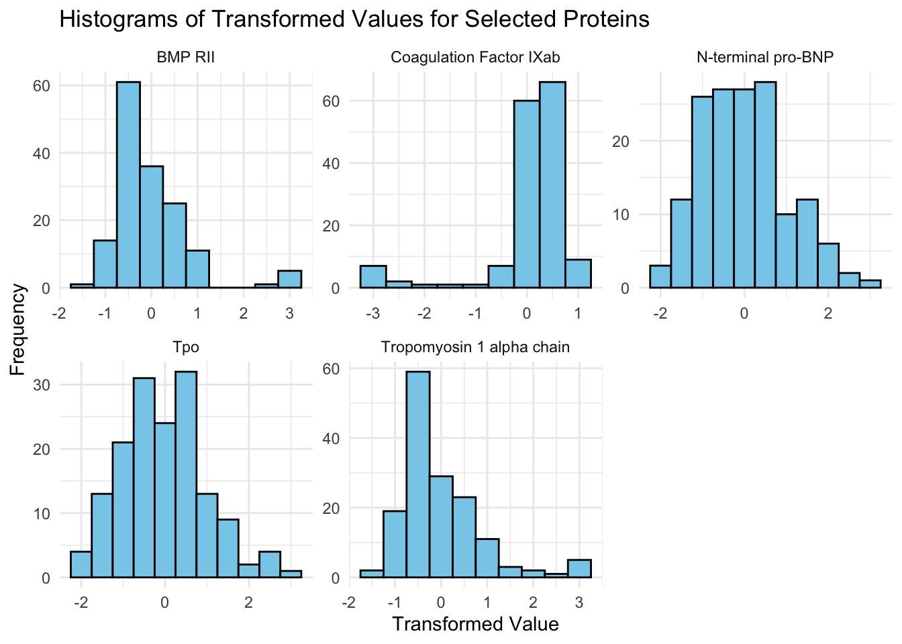

flowchart LR A(1225 proteins) A(1225 proteins) --> C(Random forest) A --> D(T-test analysis between ASD and TD groups) A --> E(Correlation analysis with ASD severity) C --> F(10 most important proteins) D --> G(10 most important proteins) E --> H(10 most important proteins) F --> I(5 core proteins common among each method) G --> I H --> I F --> J(4 non-core proteins that improved AUC) G --> J H --> J I --> L(9 optimal proteins) J --> L
Biomarkers of ASD
If you want a subtitle put it here
Abstract
Write a brief one-paragraph abstract that describes the contents of your write-up.
Dataset
For the paper, 154 male pediatric subjects were measured and split into two groups (ASD and TD). From the write-up, “The ethnic breakdown was as follows: 73 White/Caucasian, 32 Hispanic/Latino, 17 African American/Black, 5 Asian or Pacific Islander, 23 multiple ethnicities or other, and 4 not reported”. This gave the researchers a fairly large variety to do their analysis on. The data on the proteins was collected through a blood draw that was then carefully stored for analysis.
The resulting blood results contained a look at 1,317 proteins from the 154 participants. 192 of which were excluded because they lacked quality control so the end dataset examined 1,125 proteins. These protein values were then normalized through a log10 transform into a z transform. Finally, any outliers that resided above or below 3 and -3 respectively were clipped to 3 and -3 respectively. This preproccessing allowed the researchers to then perform three different tests on the dataset given its new configuration.
Summary of published analysis
Below is a diagram that displays the methodological design used in the paper.
As we can see, the study used three different methods to find the most important proteins (out of an original 1225) for predicting ASD: Random Forest, t-test, and a correlation approach. ten were selected from each method, and the five proteins common to all three groups of ten were labelled as “core” proteins. Furthermore, out of thirteen proteins that were not common among all three groups but were found to be among the ten most important using one of the methods, four proteins were found to increase the predictive accuracy of the panel, and were thus added to these optimal proteins. The proteins are listed here: IgD, suPAR, MAPK14, EPHB2, DERM, ROR1, GI24, eIF-4H, ARSB.
To evaluate the classification accuracy of these optimal proteins, a logistic regression model was used and area under the ROC curve (AUC) was used as the primary metric. The resulting estimated accuracy of this panel in classifying ASD, as measured with AUC, was 0.860 +- 0.064.
Findings
Impact of preprocessing and outliers
Task 1
When looking at the raw distributions of the biomarker-raw.csv file some interesting findings occurred. As seen from the graphs below, we can see that the distributions are all skewed right. Some of them vary on the severity of the skewness but they all produce a right skew nonetheless. This makes sense why they would need to be log transformed. Log transformations can introduce normality into the data distributions. This is important because of how skewed our data is. By log transforming, we are able to normalize the data which allows us to perform the t-tests on the data that require normality to be accurate in their analysis.

Let us now look at how the log transformed distributions for another 5 sampled proteins turns out.

Here, we can see that the values are much easier to analyze and deal with. They are mostly normally distributed now and their values are ranging between a much more understandable range instead of more sporadic values that populated the histograms with the raw csv file. For understanding the data and performing the tests it absolutely is logical to do a log10 transformation as seen in the process above with the clear change in the readability of the data.
Task 2
Methodological variations
Task 3
Results of unmodified analysis:
| Metric | Estimator | Estimate |
|---|---|---|
| sensitivity | binary | 0.8750 |
| specificity | binary | 0.8000 |
| accuracy | binary | 0.8387 |
| roc_auc | binary | 0.9083 |
Modification 1: Carrying our selection procedure using a training partition.
In the original analysis, the t-test and random forest methods of selecting important proteins were conducted using the entire biomarker dataset. For the first modification, proteins were selected by partioning the dataset into training and testing groups before analysis, then using training data to select proteins and evaluating the resulting panel’s accuracy using testing data.
Below are the results of this modification (the difference column represents the change in each metric from the original method):
| Metric | Estimator | Estimate | Difference |
|---|---|---|---|
| sensitivity | binary | 0.7647 | -0.1103 |
| specificity | binary | 0.7857 | -0.0143 |
| accuracy | binary | 0.7741 | -0.0646 |
| roc_auc | binary | 0.8067 | -0.1016 |
As we can see, each metric used to evaluate the accuracy of our classifier became worse. Both sensitivity (% of true positives) and roc_auc (a measure of true positive rate and false positive rate ) decreased by over 10 percentage points, while specificity (% of true negatives) and accuracy (% correct) decreased by modest amounts. Thus it seems that partitioning the data prior to conducting analysis in this scenario did not improve results, which is not too surprising considering the modified models were given less data to train on than the unmodified ones. Had more observations been in the biomarker dataset, the results may have more closely aligned. Furthermore, the partitioning of the data is done randomly, so perhaps a different seed would have altered the results.
Modification 2: Selecting 20 predictive proteins using each selection method.
While the top 10 predictive proteins were selected from each method during the in-class analysis, we will see if selecting 20 proteins instead will help the classifier’s accuracy. Below are the results of carrying out this modification:
| Method | Estimator | Estimate | Difference |
|---|---|---|---|
| sensitivity | Binary | 0.812 | -0.063 |
| specificity | Binary | 0.867 | 0.067 |
| accuracy | Binary | 0.839 | 0.0003 |
| roc_auc | Binary | 0.946 | 0.0377 |
Based on the results of three of the four metrics, selecting 20 of the most important proteins from each selection method improved the classification accuracy, albeit by relatively small margins. Sensitivity was the only metric included in our set that showed a decline in performance when compared to the original classifier, while the overall accuracy increased by 0.03%. In this scenario, a doubling of the amount of top predictive proteins selected from the multiple testing and random forest methods slightly improved results, but it’s unclear whether further increases in this amount would help or harm predictive accuracy, as well as what the perfect amount to select from each method would be.
Modification 3: Using a fuzzy (instead of hard) intersection to combine the sets of proteins chosen by each selection method.
Improved classifier
Task 4